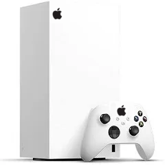
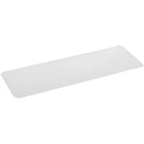

Apple

Apple Console

Apple Core GPU

Apple Dock Station

Apple Dual Power
Apple Ethernet Port

Apple FS 2024

Apple FitBand

Apple Gamepad

Apple Hub Mini

Apple Home Assistant

Apple iGames

Apple iWork

Apple MacBook Duo

Apple Magic Charger

Apple Pencil

Apple PowerBank

Apple Printer

Apple Read

Apple Real AR

Smart Cover Pro

Apple USB Hub

Apple Vision TV 1

Apple Vision TV 2

Apple Vision Pro 2
AirTags Pro